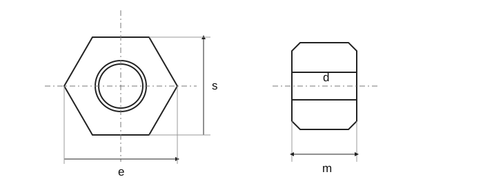

Écrous hexagonaux bas à pas fin
Source historique; valeurs et exceptions non intégralement vérifiées selon la norme actuelle.

Écrous hexagonaux bas à pas fin · Dimensions
| Paramètre | M8×1 | M10×1 | M12×1,5 | (M14×1,5) | M16×1,5 | (M18×1,5) | M20×1,5 | (M22×1,5) |
|---|---|---|---|---|---|---|---|---|
| d × P | M8×1 | (M10×1,25) | (M12×1,25) | (M14×1,5) | M16×1,5 | (M18×1,5) | (M20×2) | (M22×1,5) |
| d _a max. | 8,75 | 10,8 | 13,0 | 15,1 | 17,3 | 19,5 | 21,6 | 23,7 |
| d _a min. | 8,0 | 10,0 | 12,0 | 14,0 | 16,0 | 18,0 | 20,0 | 22,0 |
| d _w min. | 11,63 | 14,63 | 16,63 | 19,64 | 22,49 | 24,85 | 27,7 | 31,35 |
| e _min. | 14,38 | 17,77 | 20,03 | 23,36 | 26,75 | 29,56 | 32,95 | 37,29 |
| m _max. | 4 | 5 | 6 | 7 | 8 | 9 | 10 | 11 |
| m _min. | 3,7 | 4,7 | 5,7 | 6,42 | 7,42 | 8,42 | 9,1 | 9,9 |
| m' _min. | 2,96 | 3,76 | 4,56 | 5,14 | 5,94 | 6,74 | 7,28 | 7,92 |
| s _max. | 13 | 16 | 18 | 21 | 24 | 27 | 30 | 34 |
| s _min. | 12,73 | 15,73 | 17,73 | 20,67 | 23,67 | 26,16 | 29,16 | 33 |
Écrous hexagonaux bas à pas fin · Dimensions
| Paramètre | M24×2 | (M27×2) | M30×2 | (M33×2) | M36×3 | (M39×3) | M42×3 | (M45×3) |
|---|---|---|---|---|---|---|---|---|
| d _a max. | 25,9 | 29,1 | 32,4 | 35,6 | 38,9 | 42,1 | 45,4 | 48,6 |
| d _a min. | 24,0 | 27,0 | 30,0 | 33,0 | 36 | 39 | 42 | 45 |
| d _w min. | 33,25 | 38,0 | 42,75 | 46,55 | 51,11 | 55,86 | 59,95 | 64,7 |
| e _min. | 33,25 | 38,0 | 42,75 | 46,55 | 51,11 | 55,86 | 59,95 | 64,7 |
| m _max. | 12 | 13,5 | 15 | 16,5 | 18 | 19,5 | 21 | 22,5 |
| m _min. | 10,9 | 12,4 | 13,9 | 15,4 | 16,9 | 18,2 | 19,7 | 21,2 |
| m' _min. | 8,72 | 9,92 | 11,12 | 12,32 | 13,52 | 14,56 | 15,76 | 16,96 |
| s _max. | 36 | 41 | 46 | 50 | 55 | 60 | 65 | 70 |
| s _min. | 35 | 40 | 45 | 49 | 53,8 | 58,8 | 63,1 | 68,1 |
Écrous hexagonaux bas à pas fin · Dimensions · d _a max.–m' _min.
| Paramètre | M48×3 | (M52×4) | M56×4 | (M60×4) | M64×4 |
|---|---|---|---|---|---|
| d _a max. | 51,8 | 56,2 | 60,5 | 64,8 | 69,1 |
| d _a min. | 48 | 52 | 56 | 60 | 64 |
| d _w min. | 69,45 | 74,2 | 78,66 | 83,41 | 88,16 |
| e _min. | 82,6 | 88,25 | 93,56 | 99,21 | 104,86 |
| m _max. | 24 | 26 | 28 | 30 | 32 |
| m _min. | 22,7 | 24,7 | 26,7 | 28,7 | 30,4 |
| m' _min. | 18,16 | 19,76 | 21,36 | 22,96 | 24,32 |
| s _max. | 75 | 80 | 85 | 90 | 95 |
| s _min. | 73,1 | 78,1 | 82,8 | 87,8 | 92,8 |
Écrous hexagonaux bas à pas fin · Contexte normatif
| Élément | Valeur |
|---|---|
| Contexte normatif | ISO 8675:2023 |
| Grade de produit | — |
| Classe de qualité | Norme intégrale nécessaire pour vérifier dimensions, tolérances et toutes les conditions. |
Écrous hexagonaux bas à pas fin · Dimensions
| Paramètre | M8×1 | M10×1 | M12×1,5 | (M14×1,5) | M16×1,5 | (M18×1,5) |
|---|---|---|---|---|---|---|
| d × P | M8×1 | (M10×1,25) | (M12×1,25) | (M14×1,5) | M16×1,5 | (M18×1,5) |
| d _a max. | 8,75 | 10,8 | 13,0 | 15,1 | 17,3 | 19,5 |
| d _a min. | 8,0 | 10,0 | 12,0 | 14,0 | 16,0 | 18,0 |
| d _w min. | 11,63 | 14,63 | 16,63 | 19,64 | 22,49 | 24,85 |
| e _min. | 14,38 | 17,77 | 20,03 | 23,36 | 26,75 | 29,56 |
| m _max. | 4 | 5 | 6 | 7 | 8 | 9 |
| m _min. | 3,7 | 4,7 | 5,7 | 6,42 | 7,42 | 8,42 |
| m' _min. | 2,96 | 3,76 | 4,56 | 5,14 | 5,94 | 6,74 |
| s _max. | 13 | 16 | 18 | 21 | 24 | 27 |
| s _min. | 12,73 | 15,73 | 17,73 | 20,67 | 23,67 | 26,16 |
Écrous hexagonaux bas à pas fin · Dimensions
| Paramètre | M20×1,5 | (M22×1,5) |
|---|---|---|
| d × P | (M20×2) | (M22×1,5) |
| d _a max. | 21,6 | 23,7 |
| d _a min. | 20,0 | 22,0 |
| d _w min. | 27,7 | 31,35 |
| e _min. | 32,95 | 37,29 |
| m _max. | 10 | 11 |
| m _min. | 9,1 | 9,9 |
| m' _min. | 7,28 | 7,92 |
| s _max. | 30 | 34 |
| s _min. | 29,16 | 33 |
Écrous hexagonaux bas à pas fin · Dimensions
| Paramètre | M24×2 | (M27×2) | M30×2 | (M33×2) | M36×3 | (M39×3) |
|---|---|---|---|---|---|---|
| d _a max. | 25,9 | 29,1 | 32,4 | 35,6 | 38,9 | 42,1 |
| d _a min. | 24,0 | 27,0 | 30,0 | 33,0 | 36 | 39 |
| d _w min. | 33,25 | 38,0 | 42,75 | 46,55 | 51,11 | 55,86 |
| e _min. | 33,25 | 38,0 | 42,75 | 46,55 | 51,11 | 55,86 |
| m _max. | 12 | 13,5 | 15 | 16,5 | 18 | 19,5 |
| m _min. | 10,9 | 12,4 | 13,9 | 15,4 | 16,9 | 18,2 |
| m' _min. | 8,72 | 9,92 | 11,12 | 12,32 | 13,52 | 14,56 |
| s _max. | 36 | 41 | 46 | 50 | 55 | 60 |
| s _min. | 35 | 40 | 45 | 49 | 53,8 | 58,8 |
Écrous hexagonaux bas à pas fin · Dimensions
| Paramètre | M42×3 | (M45×3) |
|---|---|---|
| d _a max. | 45,4 | 48,6 |
| d _a min. | 42 | 45 |
| d _w min. | 59,95 | 64,7 |
| e _min. | 59,95 | 64,7 |
| m _max. | 21 | 22,5 |
| m _min. | 19,7 | 21,2 |
| m' _min. | 15,76 | 16,96 |
| s _max. | 65 | 70 |
| s _min. | 63,1 | 68,1 |
Écrous hexagonaux bas à pas fin · Dimensions · d _a max.–m' _min.
| Paramètre | M48×3 | (M52×4) | M56×4 | (M60×4) | M64×4 |
|---|---|---|---|---|---|
| d _a max. | 51,8 | 56,2 | 60,5 | 64,8 | 69,1 |
| d _a min. | 48 | 52 | 56 | 60 | 64 |
| d _w min. | 69,45 | 74,2 | 78,66 | 83,41 | 88,16 |
| e _min. | 82,6 | 88,25 | 93,56 | 99,21 | 104,86 |
| m _max. | 24 | 26 | 28 | 30 | 32 |
| m _min. | 22,7 | 24,7 | 26,7 | 28,7 | 30,4 |
| m' _min. | 18,16 | 19,76 | 21,36 | 22,96 | 24,32 |
| s _max. | 75 | 80 | 85 | 90 | 95 |
| s _min. | 73,1 | 78,1 | 82,8 | 87,8 | 92,8 |
Écrous hexagonaux bas à pas fin · Contexte normatif
| Élément | Valeur |
|---|---|
| Contexte normatif | ISO 8675:2023 |
| Grade de produit | — |
| Classe de qualité | Norme intégrale nécessaire pour vérifier dimensions, tolérances et toutes les conditions. |